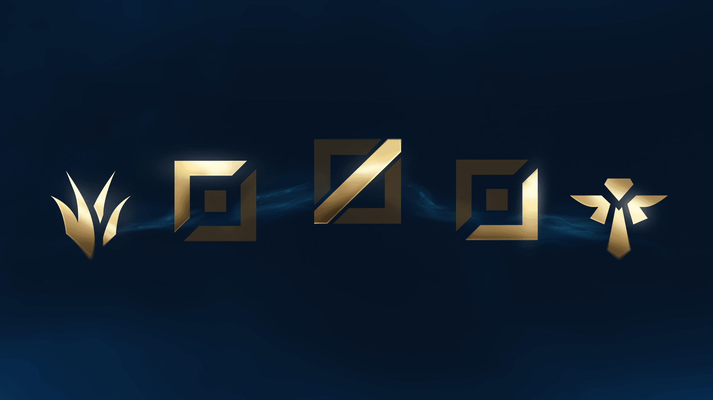
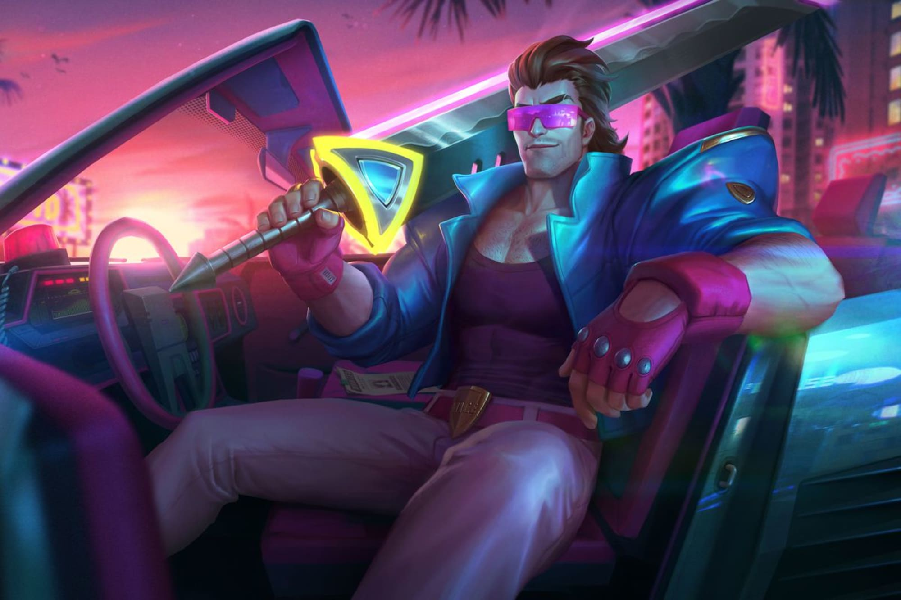
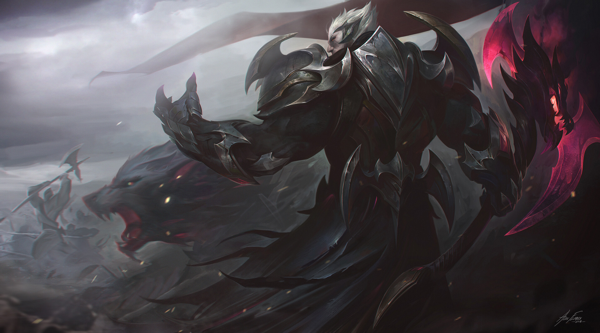

The top laner is mosty typically the team carry or the main engage tool for team fights. Shoulders and backs can become sore from carrying your 4 teammates over the finish line for the sweet 'W'.
Top Laners also need to have high survability, high damage, or a good engage. The lane also gives the player a chance to flex their 1v1 skills.

Pick Rate in Season 11: 60.16%
Win Rate in Season 11: 64.9%
A lot of top lane players call Garen a brain-dead champ. He has this reputation because his abilities do not have a Mana/Energy cost, his passive is a heal, and his Ultimate is an execute.
All the player needs to worry about are the cool downs.
They may say brain-dead, but I can hear them over the gold I get from winning the lane.

Pick Rate in Season 11: 21.95%
Win Rate in Season 11: 48.1%
Unlike Garen, Darius' skills and abilities do have a Mana cost adding a degree of complexity to his play style. Darius' passive is a stacking bleed damage on the enemy champion.
After 5 consecutive hits on one target gets Darius fully stacked. Once fully stacked, his Ultimate can be devistating. If it ends in a take down, it resets, giving the possibility to string all 5 enemy champions.
Darius can be a menace in a match and can easily carry if played correctly. It all rides on the 1v1 and the 5 stacks, but that can also be his weakness.